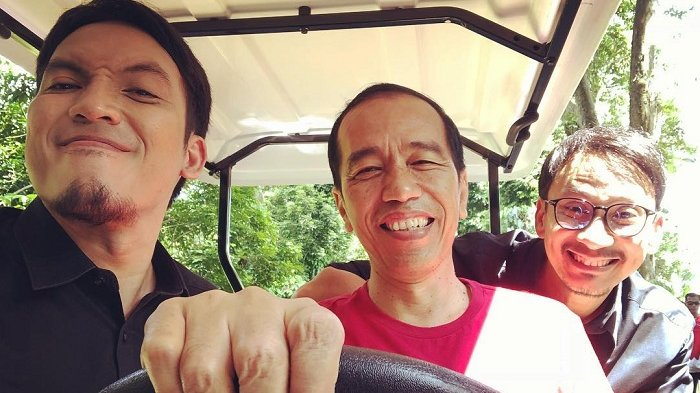
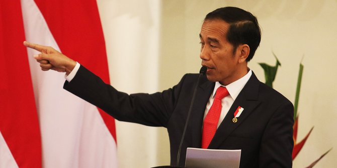

Profil Presiden Joko Widodo

Nama Lengkap : Ir. H. Joko Widodo (Jokowi)
Nama Panggilan : Jokowi
Tempat Tanggal Lahir: Surakarta, 21 Juni 1961
Orang Tua : Noto Mihardjo (Ayah), Sujiatmi Notomihardjo (Ibu)
Agama : Islam
Saudara : Ida Yati, Titik Relawati, Iit Sriyantini
Istri: Iriana Joko Widodo
Anak : Gibran Rakabuming Raka, Kaesang Pangarep, Kahiyang Ayu
Biografi Jokowi
Jokowi dilahirkan dengan nama lengkap Joko Widodo. Ia lahir di Surakarta, 21 Juni 1961. Ia merupakan Putera dari pasangan Noto Mihardjo dan Sudhiatmi dan anak sulung dari empat bersaudara.
Ia satu-satunya anak laki-laki, adiknya semua adalah perempuan. Sebenarnya, ia juga memiliki adik laki-laki namun meninggal ketika ibunya sedang bersalin. Nama kecil dari Jokowi ialah Mulyono.
Masa Kecil Mengenai perjalanan hidup Jokowi kita harus kembali ke masa kecil Joko Widodo atau Jokowi, ia termasuk seorang anak yang berasal dari keluarga sederhana atau kurang mampu.
Menjadi Kuli Panggul Hingga Ojek Payung
Berasal dari keluarga sederhana menyebabkan Jokowi merasakan hidup yang sulit dan keras, sejak ia mulai bersekolah di Sekolah Dasar Negeri 111 Tirtoyoso, menjadi seorang kuli panggul, ojek payung dan berdagang sudah ia lakoni sejak kecil hanya untuk membiayai kebutuhan sekolahnya hingga makan sehari-hari.
Disaat teman-temannya yang lain bersekolah, ia lebih memilih untuk berjalan kaki. Kepandaiannya sebagai tukang kayu didapatnya dari ayahnya yaitu Noto Mihardjo, ketika jokowi berusia 12 tahun ia sudah bekerja sebagai tukang gergaji.
Di masa itulah ia merasakan pahitnya penggusuran sebab rumahnya tiga kali terkena penggusuran, dari situ cara pikirnya tentang kepemimpinan dibentuk, ia tahu apa yang harus ia lakukan ketika ia harus menertibkan pemukiman warganya ketika ia menjadi Walikota Solo dan Gubernur Jakarta.
Hoby Presiden Jokowi
1. Hobi naik motor
2. Mendengarkan musik dan nonton konser
3. Bermain futsal
4. Memelihara hewan
5. Menonton film
Kata Bijak Presiden Joko Widodo
Saya tak mungkin berdiri di sini, tak akan menjadi seorang Presiden, tanpa didikan mereka. [Jokowi]